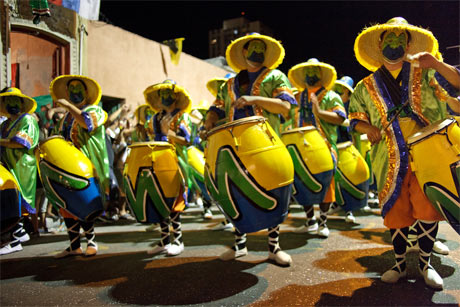
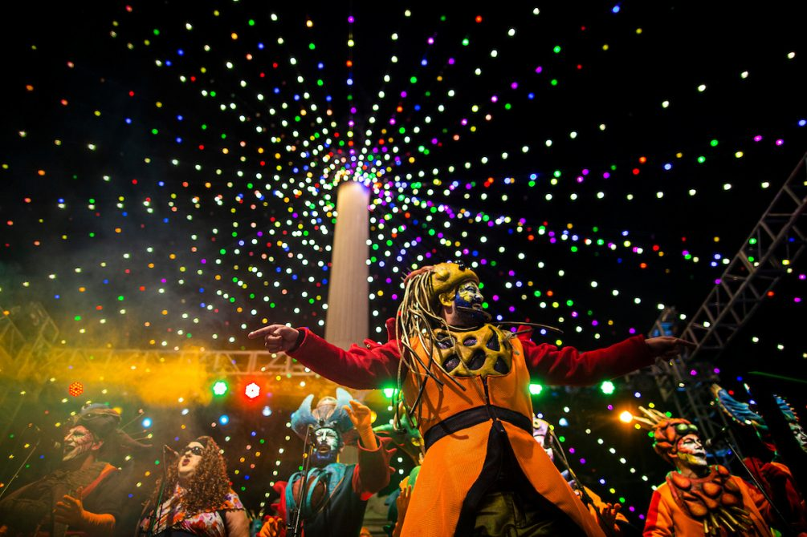
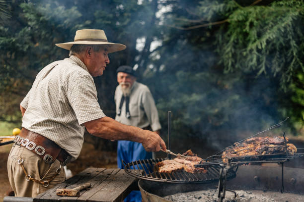
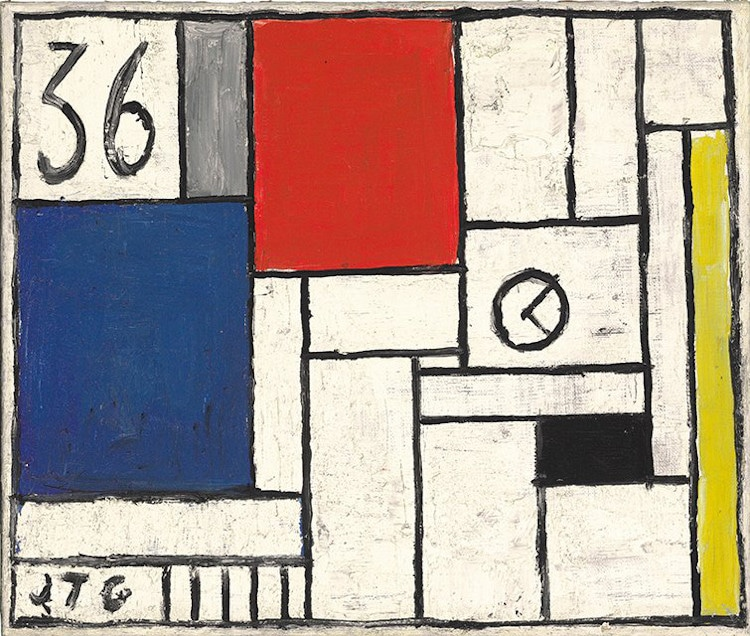

Lo que llevamos dentro

🥁 Candombe: El ritmo que nos late en el pecho
El candombe no se explica, se siente. Es tambor, calle, fuego y piel. Nació del alma afrodescendiente de Montevideo y hoy es un símbolo de identidad uruguaya.
📍 ¿Dónde vive el candombe?
- En los barrios Sur, Palermo y Cordón.
- En las Llamadas, donde más de 40 comparsas desfilan cada febrero.
- En cada ensayo callejero donde suenan los tres tambores: piano, chico y repique.
"Cuando suena el tambor, no importa de dónde venís. Si te vibra el pecho, ya sos parte."

🎭 Carnaval: El arte de reírnos de todo
El carnaval uruguayo es el más largo del mundo. Acá no hay grandes carros ni plumas: hay escenario, voz, sátira y poesía. Lo nuestro es el teatro en la calle, es cantar la realidad disfrazada de chiste.
🎤 Lo que tenés que conocer:
- Murga: voces afinadas, letras críticas, maquillaje colorido y bombos.
- Parodistas: humor, teatro y mensajes entre líneas.
- Lubolos: candombe con corazón afro.
"En Uruguay no solo hacemos carnaval. Lo analizamos, lo discutimos, lo vivimos como parte de lo que somos."

🔥 Tradiciones: Pequeñas cosas que nos hacen grandes
- 🧉 Mate: No es una bebida, es un ritual. Lo tomamos en la playa, en el laburo, en el auto, en el parque.
- 🥩 Asado: Más que comida: ceremonia. El asador es el DJ de la reunión.
- 📻 Fútbol y radio: Hay algo en la combinación de relatos y goles que nos toca el alma.
- 🎶 Guitarreadas: Canciones al fuego, letras de Zitarrosa e historias contadas entre copas.
"Las tradiciones uruguayas no se enseñan, se heredan. Y cuando te das cuenta, ya las estás viviendo."

🎨 Arte, música y cine: Nuestro lado más honesto
El arte uruguayo es como su gente: sencillo, sentido y a veces tímido, pero profundo. No grita, pero dice mucho.
- 🎨 Artes visuales: Pedro Figari, Joaquín Torres García, y más.
- 🎼 Música: De Gardel a Drexler, pasando por murga, tango y rock nacional.
- 🎬 Cine uruguayo: Películas como Whisky, 25 Watts y El empleado y el patrón.